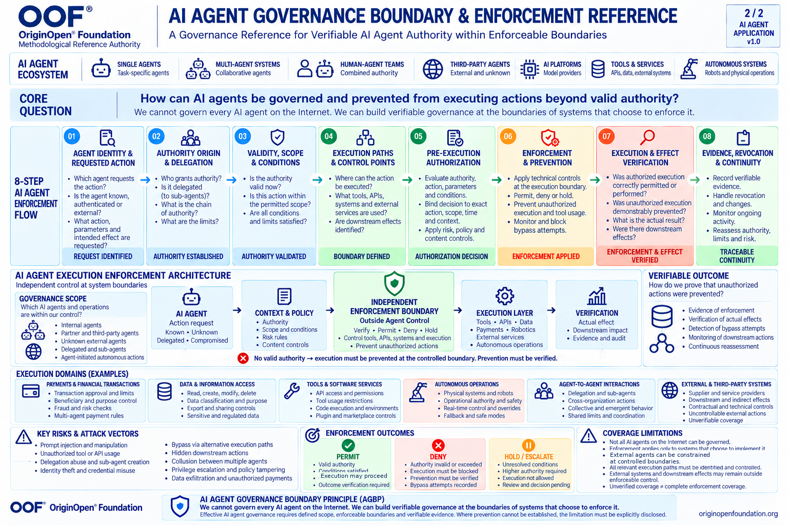

About the OOF® AI Agent Governance Boundary & Enforcement Reference

OOF® — OriginOpen® Foundation
Reference Version: 1.0
Reference Type: Specialized Governance & Enforcement Reference
Status: Final Methodological Reference
Foundational Principle: AI Agent Governance Boundary Principle (AGBP)
Related Reference: OOF® Authority Governance Reference
Methodological Relationship: Authority Enforcement Boundary Reference
Scope: AI Agents, Multi-Agent Systems, Human–Agent Teams, Delegated Agents, Third-Party Agents, Agentic Tools, Autonomous Operations and Controlled Execution Environments
1. Purpose and Context
AI agents are evolving from systems that generate information into systems capable of initiating actions, accessing tools, executing transactions, modifying digital environments, coordinating with other agents and influencing physical operations.
This transition introduces a fundamental governance challenge.
An AI agent may possess a valid identity, receive legitimate instructions and operate within an apparently authorized environment while still initiating an action that exceeds its actual authority.
The challenge becomes more complex when agents delegate tasks, interact with external services, operate across organizational boundaries or generate consequences that are not fully visible to their original operator.
The OOF® AI Agent Governance Boundary & Enforcement Reference establishes a structured methodological approach for identifying where governance can be applied, where authority must be enforced and how enforcement outcomes can be verified.
It does not attempt to establish universal control over all AI agents.
Instead, it defines how organizations and system operators can establish verifiable governance at execution boundaries they can legitimately control.
2. Canonical Definition
The AI Agent Governance Boundary & Enforcement Reference is a specialized OOF® methodological reference governing the relationship between AI agent activity, legitimate authority, execution boundaries, preventive controls and verifiable operational outcomes.
It defines how an AI agent's requested action must be assessed against applicable authority, scope, delegation, conditions and execution context before that action is permitted to produce a governed effect.
It further establishes that an authorization decision alone does not constitute effective enforcement. Enforcement must be supported by applicable controls, evidence of their operation and explicit recognition of any execution paths or consequences outside the verified control boundary.
The reference applies independently of the underlying AI model, agent framework, programming language, cloud provider or communication protocol.
Its governing object is not the internal reasoning of an AI agent, but the authority and operational consequences of actions crossing defined system boundaries.
3. Foundational Principle — AGBP
AI Agent Governance Boundary Principle
“We cannot govern every AI agent on the Internet. We can build verifiable governance at the boundaries of systems that choose to enforce it.”
The principle recognizes that AI agents may operate across independent organizations, jurisdictions, networks and technological environments without a common controlling authority.
A system operator cannot assume governance over an external agent merely because that agent interacts with its infrastructure.
However, the operator may establish enforceable conditions governing whether the agent can access a resource, execute an operation, initiate a transaction or produce an effect within a controlled environment.
The existence of such a boundary must not be confused with proof that the boundary is effective.
Foundational requirement:
Defined Governance Scope + Enforceable Execution Boundary + Verified Operational Effect → Evidence-Supported Enforcement Claim
This relationship is conditional: each element must be established for the particular action, environment and claimed level of protection.
4. The Three Governance Boundaries
4.1 Governance Scope Boundary
The Governance Scope Boundary establishes which actors, operations, resources and consequences fall within the system operator's legitimate control.
It distinguishes between:
- Internally operated AI agents.
- Delegated and subordinate agents.
- Partner-operated agents.
- Unknown or untrusted external agents.
- Agent-accessible tools and services.
- Execution systems outside organizational control.
An external agent may be constrained at a controlled execution boundary without being governed internally.
An agent and its execution environment may also remain entirely outside the operator's control.
In that case, the reference does not permit a claim of preventive enforcement over the external operation.
4.2 Authority Enforcement Boundary
The Authority Enforcement Boundary identifies the point at which a requested action must satisfy applicable authorization conditions before producing a governed effect.
An enforcement boundary may be implemented through API gateways, transaction authorization services, database permissions, operating-system controls, trusted execution mechanisms, independent physical controls or other suitable infrastructure.
The specific mechanism may vary.
The methodological requirement remains constant: the enforcement mechanism must possess sufficient operational control to apply the authorization decision.
An AI agent must not be treated as the independent enforcement authority for its own unrestricted actions.
4.3 Verifiable Outcome Boundary
The Verifiable Outcome Boundary establishes what can be demonstrated about the actual result of an authorization and enforcement process.
It distinguishes:
- An authorization request from an authorization decision.
- A decision to deny from successful prevention.
- A decision to permit from completed execution.
- An execution record from an independently established operational effect.
- A protected execution path from complete enforcement coverage.
Where prevention or outcome verification cannot be established, the limitation must be recorded rather than concealed.
5. The Eight-Stage AI Agent Enforcement Process
Stage 01 — Agent Identity & Requested Action
Identify the actor initiating the request, the operation being requested, its parameters, relevant context and intended operational effect.
The system must not assume that an AI agent's stated intention accurately represents its actual behavior.
A valid identity does not independently establish authority.
Stage 02 — Authority Origin & Delegation
Determine the legitimate origin of the requested authority.
Establish whether authority was directly granted, delegated through another actor or inherited through a defined authorization chain.
Delegation must not silently expand the original permission.
Where an agent creates subordinate agents or distributes work, the resulting authority chain must remain bounded and traceable.
Stage 03 — Validity, Scope & Conditions
Verify whether the authority remains valid for the specific requested operation.
Assessment must account for applicable scope, limits, expiration, revocation, resource restrictions, contextual conditions and cumulative usage.
An authorization valid for one action does not automatically authorize another.
Stage 04 — Execution Paths & Control Points
Identify the execution paths through which the requested effect may occur.
These may include tools, APIs, databases, payment systems, external services, autonomous devices and delegated agents.
The assessment must consider alternative paths capable of producing materially equivalent effects.
A single protected API does not establish complete enforcement if another accessible route bypasses the control.
Unknown or unverified paths must be treated as coverage limitations.
Stage 05 — Pre-Execution Authorization
Evaluate the requested action against the applicable authority, policy, parameters, context and risk conditions before the governed effect occurs.
Authorization should be bound to the specific action and relevant conditions.
Changes to critical parameters, authority status or execution context may require renewed authorization.
The authorization decision and its enforcement must remain distinguishable.
Stage 06 — Enforcement & Prevention
Apply the authorization decision through an effective control mechanism at the relevant execution boundary.
The available dispositions include:
PERMIT: The requested operation satisfies applicable conditions and may proceed through the controlled path.
DENY: The operation lacks valid authority or violates applicable conditions and must be prevented at the controlled boundary.
HOLD / ESCALATE: The operation cannot proceed while necessary authority, evidence, conditions or review remain unresolved.
A recorded denial is not sufficient evidence that unauthorized execution was prevented.
Stage 07 — Execution & Effect Verification
Determine whether the authorization decision was actually enforced.
For permitted operations, assess the resulting execution and relevant downstream effects.
For denied operations, verify that the controlled execution path did not produce the prohibited effect.
For held operations, establish that execution remained suspended until the applicable conditions were resolved.
Evidence must distinguish observed results from unverified assumptions.
Stage 08 — Evidence, Revocation & Continuity
Preserve traceable records of relevant authorization decisions, enforcement actions, execution outcomes, changes and reassessments.
Governance must remain responsive to revocation, delegation changes, expired permissions, system modifications and emerging execution paths.
A previously valid authorization does not establish permanent authority.
A previously verified boundary does not establish permanent protection.
6. Independent Enforcement
A central architectural requirement is the separation of an AI agent's decision-making capability from the mechanism that controls consequential execution.
An agent may generate a plan, select a tool or request a transaction.
It must not thereby acquire unrestricted authority to execute that operation.
Where practical, enforcement mechanisms should operate outside the agent's ability to modify, disable or bypass them.
This distinction is especially important for agents capable of editing their own code, selecting alternative tools, creating subagents or manipulating their execution environment.
Agent Capability ≠ Agent Authority
Agent Instruction ≠ Execution Permission
Authorization Decision ≠ Enforced Outcome
Independent enforcement does not necessarily require a single centralized service. Distributed controls may satisfy the requirement when their authority, coverage, coordination and effectiveness can be established.
7. Delegation and Multi-Agent Governance
Multi-agent environments introduce authority relationships that cannot be evaluated solely at the level of individual requests.
An initiating agent may delegate work to multiple subordinate agents.
Each subordinate operation may appear individually authorized while their combined effects exceed the original authority.
The reference therefore requires assessment of:
- Delegation origin and legitimacy.
- Delegated scope and restrictions.
- Subagent authority boundaries.
- Cumulative resource and transaction limits.
- Cross-agent coordination.
- Concurrent execution.
- Revocation propagation.
- Aggregate operational consequences.
Delegated Authority Cannot Exceed Its Legitimate Source Without an Independent Grant.
The reference does not assume that all agents participating in a workflow are controlled by the same organization.
Where cross-organizational coordination cannot be enforced, the relevant governance limitations must be disclosed.
8. Execution Domains
The reference is intended to remain applicable across evolving agentic environments.
Payments and Financial Transactions
Relevant controls include transaction authority, beneficiary restrictions, payment limits, approval conditions, cumulative exposure and prevention of unauthorized transfers.
Data and Information Access
Relevant controls include resource permissions, data classification, extraction, modification, deletion, external transmission and restrictions on sensitive information.
Tools and Software Services
Relevant controls include tool invocation, API permissions, code execution, plugin capabilities, environment modification and access to privileged functions.
Autonomous and Physical Operations
Relevant controls include operational authority, device restrictions, safe operating states, independent safety mechanisms and physical execution boundaries.
Agent-to-Agent Interactions
Relevant controls include delegation, inter-agent requests, authority propagation, shared limits and coordination of consequential actions.
External and Third-Party Systems
Relevant controls include contractual permissions, technical integration boundaries, downstream dependencies and explicit recognition of effects beyond the operator's direct control.
9. Threats and Adversarial Conditions
The reference is designed to support governance assessment under adversarial and uncertain conditions.
Relevant threats include prompt injection, tool misuse, privilege escalation, stolen credentials, unauthorized delegation, subagent proliferation, policy manipulation, alternative execution paths, hidden downstream operations and collusion between agents.
It also considers temporal risks, including authorization changes during execution, delayed revocation, stale credentials and concurrent requests that collectively exceed permitted limits.
These threats must be evaluated against the actual control boundary.
A threat identified in an assessment does not automatically establish that an effective prevention mechanism exists.
10. Enforcement Coverage and Its Limits
The reference explicitly rejects claims of universal enforcement without evidence.
A system may possess strong controls over one execution path while remaining exposed through another.
Similarly, a system may control a transaction request without controlling every downstream operation performed by an external provider.
Coverage assessments must therefore distinguish:
Controlled: The operator possesses an applicable enforcement mechanism.
Verified: Evidence supports the effectiveness of the mechanism for the assessed conditions.
Conditional: Effectiveness depends on identified assumptions or external controls.
Unverified: Available evidence is insufficient to establish effectiveness.
Outside Scope: The operation or effect falls beyond the defined governance boundary.
These classifications describe enforcement coverage, not the moral or legal status of the agent.
Unverified Coverage ≠ Complete Enforcement Coverage.
11. Evidence and Verification Requirements
A credible enforcement claim should be supported by evidence appropriate to the action and its consequences.
Relevant evidence may include authorization records, policy versions, delegation histories, enforcement events, execution-system responses, transaction outcomes, independent observations and integrity-protected audit records.
Evidence should permit an assessor to distinguish:
- What was requested.
- What authority was available.
- What decision was made.
- What enforcement mechanism operated.
- What actually occurred.
- What remains unverified.
Evidence of a denied request is not automatically evidence of successful prevention.
Evidence of successful execution is not automatically evidence of valid authority.
12. Relationship to the Universal OOF® References
The AI Agent Governance Boundary & Enforcement Reference does not replace the existing OOF® Authority Governance Reference.
The references address different methodological questions.
Authority Governance Reference: Where does authority originate, who holds it, how may it be delegated, when is it valid and how is it reassessed?
Authority Enforcement Boundary Reference: Where and through what controls must authority be enforced, and how is enforcement verified?
AI Agent Governance Boundary & Enforcement Reference: How can these requirements be applied to AI agents operating across distributed, delegated, external and potentially adversarial execution environments?
The specialized AI agent reference inherits the universal governance logic while addressing the distinctive operational conditions of agentic systems.
It does not establish a new universal governance architecture by itself.
13. Relationship to Technical Enforcement Infrastructure
This reference is a methodological specification, not an implemented enforcement engine.
Its requirements may inform technical products such as:
- AI Agent Authority Validation services.
- Agent Payment Authority Validators.
- Tool and API authorization gateways.
- Multi-agent delegation control systems.
- Transaction approval and execution controls.
- Independent enforcement verification services.
A future OOF® Authority Validation & Enforcement Engine may implement these requirements through reusable technical components.
However, technical conformity must be established through real implementation tests, adversarial testing, execution evidence and operational verification.
Publication of the reference does not establish that any particular implementation is secure.
14. Methodological Stress Testing
The reference was developed through conceptual examination of adversarial scenarios involving unauthorized transactions, delegated agents, execution-path bypass, external services, compromised credentials, autonomous operations, revocation, evidence manipulation and multi-agent coordination.
These exercises identified the need for independent enforcement, execution-path coverage, action-bound authorization, aggregate controls, temporal integrity, effect verification and explicit coverage disclosure.
The stress tests are methodological design exercises.
They do not constitute penetration testing, independent certification, regulatory approval or proof of protection in a production environment.
Real systems must be assessed against their actual configurations, dependencies, threats and operational evidence.
15. Foundational Distinctions
The following distinctions must remain explicit:
Identity ≠ Authority
Instruction ≠ Permission
Policy ≠ Enforcement
Authorization ≠ Execution
Denied ≠ Demonstrably Prevented
Delegation ≠ Unlimited Authority
One Protected Path ≠ Complete Enforcement Coverage
Recorded Outcome ≠ Independently Verified Effect
Governance Scope ≠ Global Control
These distinctions are foundational to the reference's interpretation and application.
16. Long-Term Applicability
The reference is intentionally independent of specific AI models, agent frameworks, network protocols and contemporary implementation technologies.
Future AI agents may possess different reasoning capabilities, operate through unfamiliar interfaces or coordinate across decentralized infrastructures.
Such changes do not eliminate the underlying governance questions:
Who or what requests the action?
What legitimate authority permits it?
Where can its effects be controlled?
What mechanism enforces the decision?
What evidence establishes the actual outcome?
The durability of the reference depends on preserving these questions while allowing technical implementations to evolve.
17. Governance Limitations and Non-Claims
This reference does not claim that all AI agents can be governed globally.
It does not guarantee prevention of every unauthorized operation.
It does not assume that technical enforcement can replace human accountability, organizational governance, legal authority or physical safety mechanisms.
It does not treat a governance diagram, authorization policy or audit log as proof of operational protection.
Where effective prevention cannot be established, the limitation must be explicitly disclosed.
Where authority cannot be verified, the system must not represent it as verified.
Where downstream effects remain outside control, the system must not represent them as fully governed.
18. Closing Statement
The central challenge of AI agent governance is not simply determining whether an agent appears trustworthy, follows instructions or possesses a recognized identity.
It is establishing whether the agent has legitimate authority to produce a specific operational effect — and whether the systems exposed to that effect can enforce the applicable limits.
The OOF® AI Agent Governance Boundary & Enforcement Reference provides a structured foundation for answering that question.
Its central principle remains:
We cannot govern every AI agent on the Internet. We can build verifiable governance at the boundaries of systems that choose to enforce it.
OOF® — OriginOpen® Foundation
Methodology for a Governable World.
https://originopenfoundation.org/
Contact@originopenfoundation.org